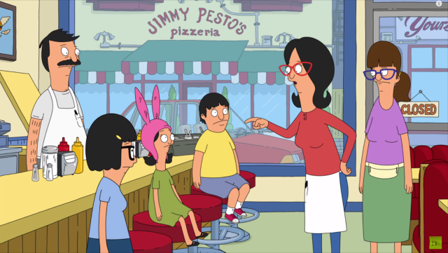

<section id="louises">
	<div id="louiseTop"></div>
	<h2>Louise Belcher</h2>
	<a class="home" ui-sref='home'><i class="fa fa-home" aria-hidden="true"></i>Home</a>
	
	<div class="each">
    	<ul ng-class-even="'orange'" ng-class-odd="'purple'" ng-repeat="louise in louises | filter:search">
    		<li class="quote">Louise: "{{louise.quote}}"</li>
    		<li class="episode">Season {{louise.season}}, Episode {{louise.episode}}</li>
    		<div class="quotesRow row">
    			<div class="column small-3">
    				<label for="louiseLikes"> <i class="fa fa-thumbs-up" aria-hidden="true"></i> {{louise.likes}}</label>	
    				<a id="louiseLikes" ng-click="likeIt(louise)" class="button small round like">Like</a>
    			</div>
    			<div class="likeBtns column small-3">
    				<label for="louiseDislikes"> <i class="fa fa-thumbs-down" aria-hidden="true"></i> {{louise.dislikes}}</label>	
    				<a id="louiseDislikes" ng-click="dislikeIt(louise)" class="button small round like">Dislike</a>	
    			</div>
    			<div class="top column small-6">
    				<a class="top" ng-click="scrollTo('louiseTop')"><i class="fa fa-arrow-up" aria-hidden="true"></i> back to top</a>
    			</div>
    		</div>
    	</ul>
    </div>
</section>